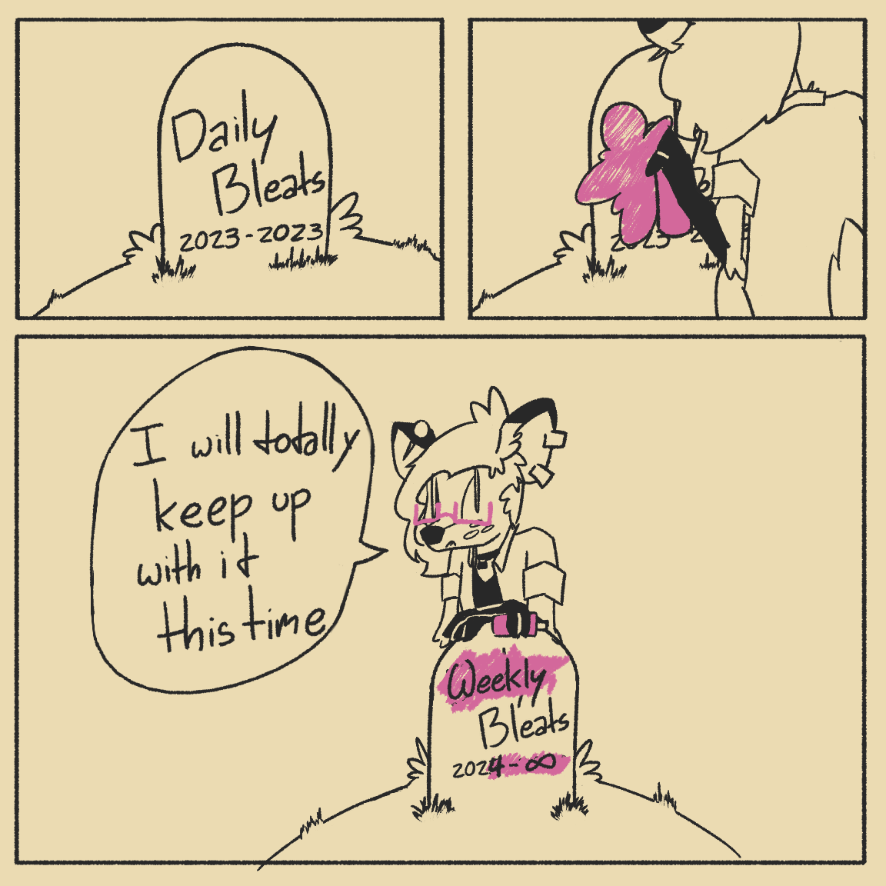

Hello, world!
Hi! Lena here.
I was home alone this week, which kinda made me fall into a hazy pit of just sitting on my desk and scrolling Tumblr while watching videos on my second screen. I don't think this is a morally wrong way to spend time (not a cop), but I have terminal Artist Disease and my mental health consistently tanks whenever I'm not planning or working on a creative project. So I started brainstorming ways to use this website -to keep myself busy, if nothing else- and I got the idea to start a weekly newsletter to both share stuff and keep myself accountable to do progress on my projects :3
This idea came at a great time I think? Like, it's the first week of the year! I personally disagree with making a big deal out of calendar-based shit, but I must admit there is an undeniable mystique to starting a big project right at the start of the year. It will make calculating milestones and anniversaries way easier, at the very least.
I look forward to this becoming part of my routine. It feels like something the person I want to be would do, and that's fun~
Updates
I started doing weekly comics! I intend to keep drawing one of these every week to use them as banners in each installment of the newsletter. I will also be posting the comics (with links to each newsletter update) on Tumblr, so if you have a Tumblr you can indirectly follow the newsletter there I guess?
My wife and I decided to track our sneezes this year as a silly resolution/challenge thing! I intend to make a small web-app to visualize my sneezes this year. I'll write more about this project when that is done, though. For now, I can say I have only sneezed twice this week, both times in the last 24 hours.
I'm starting a media log page where I will share what I listen/read/watch/play this year. I intend to update this page every week when I post a new installment of the newsletter, so keep an eye out if you somehow think I have good taste :P If you also interacted with the art I add, feel free to talk to me about it! Would love to hear people's opinions~
Since all of these projects are related to my website, it should come as no surprise that I plan to do a full rewrite of it! This will probably take multiple weeks, so I doubt it will be done by the time the next newsletter comes out, but might as well share this here to start building some hype lmao. I'm very excited about the ideas I have for this!
Finally: work on my upcoming webcomic, Dead End, has been picking up! I intend to start posting pages sometime before this semester ends, and I'm super excited about it. It's gonna be my biggest art project yet, and I really hope it goes well. I'll talk more about it as progress continues, but for now just know it's happening I guess :P
Media log additions
- MUSIC: Patricia Taxxon - Bicycle
- MUSIC: TAS 1000 - A Message For Martha
- MUSIC: Car Seat Headrest - Faces From The Masquerade
- MUSIC: CJ The X - Overgrowth
- MUSIC: Pent Up Pup - Pent Up Pup
- BOOK: Cixin Liu - Of Ants and Dinosaurs
- BOOK: Hundred Rabbits - Busy Doing Nothing
- BOOK: Andreas Malm - How to Blow Up a Pipeline
Linkdump
- [BLOG: Hundred Rabbits] Super interesting blog by two artists who live and work on a sailboat. I really like their work and their mission/philosophy resonated a lot with my own projects and goals. In a way, it inspired me to rethink the way I approach many things, and that must be worth something.
- [GAME: Donsol] Dungeon crawler card solitaire. It plays like a very chill reduction of roguelike games. I've been playing it a lot both on my phone and with my pocket deck of solitaire cards, and it's definitely up there as one of my favorite solitaire games now... Maybe I should make my own solitaire variant, hmm...
- [ARTICLE: How the press manufactured consent for never-ending COVID reinfections] I have been getting increasingly irritated about how we are being forced to normalize and ignore that there has been a mass disabling fully avoidable pandemic going on for the last four years. This article showcases how the media was used to frogboil into where we're at. It's US-centric, as fucking everything is online these days, but the narrative is beat-for-beat the same bullshit my country's local media pulled, so I must assume it applies to other places too.
- [WEBSITE: msx.horse] Emma Essex, of Vulpvibe, Lapfox and Halley Labs fame, recently did a full update of their website. Checking out her new site kinda jumpstarted the wave of inspiration that led to me creating this newsletter, so I felt like it was relevant enough to share~